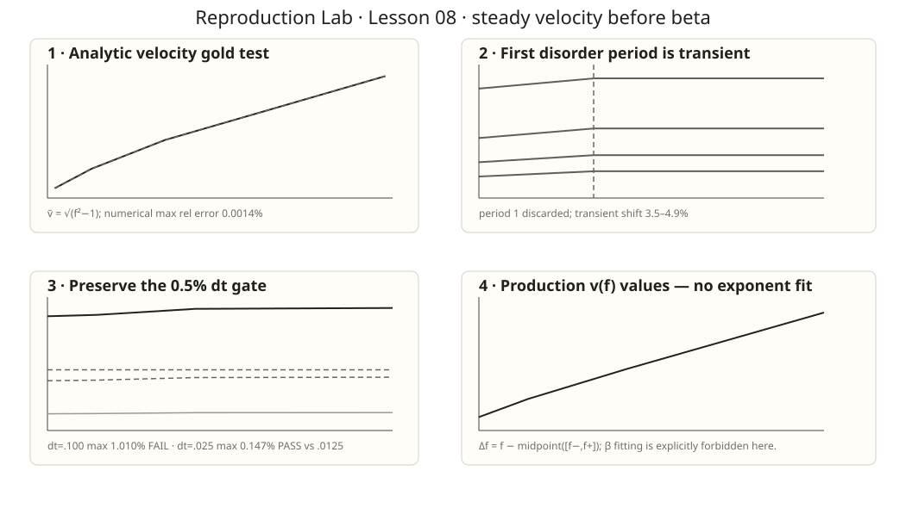

一条 wall 已经 moving，不等于你已经测到了 steady v(f)
Lesson07 只负责把固定 disorder sample 的 depinning threshold 锁进 bracket。本课继续用同一个 sample，但换一个问题：在 f>fc 后，什么时候可以丢掉 transient，怎样定义 center-of-mass velocity，时间步多粗会把速度系统性压低？这三关不过，下一课就禁止拟合 β。
0 · 论文把 velocity 定义成什么？
Ferrero et al. 在 Method and Observables 中对 d=1 QEW line 定义 center-of-mass velocity：
在他们取 η=c=1 的写法中，这也就是所有 site 上 instantaneous total force 的空间平均。更关键的是，论文把 non-steady relaxation 和 steady state 分开：在 f>fc 时，经过临界附近的 relaxation 后 velocity 才达到 steady value；在 f<fc 时最终会 blocked、v→0。
1 · 原论文 Figure 1(b)：transport story 的总地图

2 · 先用有解析答案的 moving system 验 velocity estimator
沿用 Lesson07 的 tilted washboard，但这次取 f>1。一个完整 2π 周期的平均速度有解析答案：
脚本用“连续跨过多个 2π period 的 crossing time”来估速度；为了避免 step-size 对 crossing time 的量化误差，最后一步使用线性插值定位 crossing。
| 检查 | 结果 | gate |
|---|---|---|
| f ladder | 1.05 / 1.10 / 1.20 / 1.50 | registered |
| dt | 0.020 | registered |
| max relative error vs √(f²−1) | 0.001387% | <0.002% |
3 · 同一个 Lesson07 disorder sample：第一个 period 明显不是 steady
保持 seed=20260902、L=32、M=256、du=0.25、rf=1.0，并重新计算 Lesson07 bracket：
四个测试 drive 固定为 midpoint + Δf，Δf = 0.02, 0.04, 0.08, 0.16。每个 drive 都从同一个 last-pinned configuration 出发。
period 1
只用来 warm up；它仍带着 depinning transient。
period 2–4
连续三个完整 u-period 作为 measurement window。
stationarity
三个 period 的速度必须彼此一致，而不是只看一个长窗口平均。
| 诊断 | 实际结果 | 解释 |
|---|---|---|
| period 1 vs steady | 低 3.47%–4.93% | 从 pinned state 解锁后的真实 transient |
| period 2–4 spread | 最大 0.0010% | periodic test box 中已经进入稳定 traversal |
4 · 保留原来的 <0.5% gate：粗 dt 真的失败了
preflight 已经暴露 dt=0.1 太粗，因此没有改 gate。正式 ladder 用 dt=0.0125 作为本课 reference：
| dt | 跨四个 drive 的 max error vs dt=.0125 | 状态 |
|---|---|---|
| 0.100 | 1.010% | FAIL |
| 0.050 | 0.439% | 刚过 gate |
| 0.025 | 0.147% | PASS · production |
| 0.0125 | reference | comparison authority |
5 · production velocity 可以登记，但还不能叫 β
| Δf | f | v(dt=.025) | v(dt=.0125) |
|---|---|---|---|
| 0.020 | 0.797709961 | 0.304157138 | 0.304576417 |
| 0.040 | 0.817709961 | 0.336752820 | 0.337223824 |
| 0.080 | 0.857709961 | 0.390721774 | 0.391295561 |
| 0.160 | 0.937709961 | 0.492101344 | 0.492828001 |
6 · 这节证明了什么？没证明什么？
已经证明
velocity estimator 恢复解析 moving benchmark；同一 quenched sample 的 first traversal 是明显 transient；三个后续 period 稳定；固定 0.5% dt gate 下 dt=.025 对 .0125 收敛到 0.147%。
还没证明
没有 thermodynamic v(f)；没有 β；没有 disorder-average uncertainty；没有 finite-size scaling；没有说明 sliding-FE 一定属于 QEW universality class。
7 · 完整脚本与 run receipt
打开完整 Python 脚本 → 打开 machine-readable receipt →
particle max rel error = 0.001387% coarse dt=.100 max error = 1.010% FAIL (<0.5% gate) production dt=.025 max err = 0.147% PASS first-period transient shift = 3.47% .. 4.93% steady 3-period spread max = 0.0010% NO BETA FIT IN LESSON 08 STEADY VELOCITY ESTIMATOR + DT CONVERGENCE PASS
8 · Lesson09 已上线：β 先过 fit-window stability gate
Lesson09 才允许第一次做 critical power-law，但不是给四个点画一条直线。每个 disorder sample 自己找 threshold，再按预注册 Δf window ladder 检查 β 是否稳定；如果 window drift 不收敛，即使某个 β 碰巧接近文献值也保持 failure。